QA 검증 관리 시스템 — 요구사항 및 기능사양서
작성 기준: 2026-09-09 · 운영 서버 10.13.0.222 반영 완료분 · 화면 스크린샷은 실제 화면을
캡처한 것
0. 이 문서를 읽는 법
이 문서는 화면에서 실제로 무엇을 보고, 무엇을 누르면 어떤 결과가 나오는지를 기준으로 정리했다. 내부 구현 방식(코드 구조, 통신 방식 등)은 다루지 않는다 — 다만 사용자가 화면에서 체감하는 차이(예: 진행 상황이 실시간으로 바뀌는지, 저장 후 새로고침이 필요한지)는 남겨 두었다.
0.1 사양번호 체계
모든 항목에 대분류-중분류 형식의 사양번호를 붙였다. 예: 01-03.
- 대분류(2자리) — 시스템 화면(탭) 단위.
00은 특정 탭에 속하지 않는 공통 기반이고,01~07은 실제 메뉴 탭 하나씩에 대응한다. - 중분류(2자리) — 화면 하나. 그 화면의 진입 경로·화면 구성·버튼과 결과·표시
데이터·조건에 따라 달라지는 표시를 전부 이 번호 하나 아래에 모아서 정리했다. 화면
안에 탭이나 섹션이 여러 개 있으면(예: 분석 상세 화면의 6개 탭) 같은 번호 안에서
####소제목으로 구분했다.
"01-03 을 이렇게 바꿔줘", "04-01 에 이 버튼을 추가해줘" 처럼 사양번호로 지목하면 된다.
0.2 상태 기호
| 기호 | 뜻 |
|---|---|
| ✅ | 구현되어 운영 서버에서 동작 |
| ◐ | 일부만 구현 (무엇이 빠졌는지 항목에 적음) |
| ○ | 미구현 — 요구하면 만들 수 있음 |
| ✋ | 의도적으로 하지 않음 — 이유가 항목에 있음. 뒤집으려면 그 이유를 함께 봐야 함 |
0.3 스크린샷에 대해
이 문서의 스크린샷은 목업이 아니라 실제 화면을 그대로 캡처한 것이다. 다만 로컬에 있는 데이터 그대로 찍었으므로, 일부 화면(QA Agent 분석 상세 등)은 예시로 고른 분석 건이 하필 결과가 빈약해 보일 수 있다. 화면 레이아웃과 구성 요소를 확인하는 용도로 보고, 실제 값(건수·상태)은 운영 서버의 실제 데이터로 다시 확인해야 한다. 데이터가 아예 없어 캡처가 불가능한 화면은 그 항목에 사유를 적어 두었다.
0.4 대분류 목록
| 번호 | 대분류 | 비고 |
|---|---|---|
| 00 | 공통 기반 | 배경·범위·시스템구성·공통요구사항 (화면 없음) |
| 01 | QA Agent | /qa-agent — Issue 기반 Regression 분석, 5개 화면 |
| 02 | Regression 영향 분석 | /impact-analyzer — 5개 화면 |
| 03 | 매뉴얼 개정 검증 | /manual-review — 3개 화면 |
| 04 | Knowledge 관리 | /knowledge — 3개 화면 |
| 05 | 비용 대시보드 | /cost-dashboard — 2개 화면 |
| 06 | QA Manual Hub | /manual-hub — 하위 서비스(별도 시스템) |
| 07 | 운영 | 배포·감시·백업 (화면 없음) |
00 공통 기반
화면이 아니라 전체 시스템에 걸친 배경·제약·정책이다. 각 항목은 특정 화면이 아니라 여러 화면(01~06)이 공유하는 동작을 규정한다.
00-01 배경과 목적
풀려는 문제. SW 가 바뀔 때마다 QA 는 "어떤 Test Case 를 다시 검증해야 하는가" 를 판단한다. 지금은 사람이 사양서·매뉴얼·기존 TC 를 뒤져서 판단하므로 두 방향으로 틀린다 — 누락(변경과 무관해 보이지만 실제로 영향받는 TC 를 빠뜨림, 상태 전이·저장/재시작·권한· 연동 경로에서 특히 자주)과 과잉(확신이 없어 필요 이상으로 넓게 잡아 검증 시간이 늘어남). 판단 근거(사양서·매뉴얼·TC)는 이미 문서로 존재한다. 사람이 그것을 매번 다시 찾는 것이 비용이다.
보안 원칙 — ✋. 가장 쉬운 해법은 사양서·매뉴얼 전체를 AI 서비스에 올리고 물어보는 것이다. 그렇게 하지 않는다. 제품 사양서와 매뉴얼은 사내 자산이고, 전체를 외부로 올리는 것 자체가 문제다. 그래서 이 시스템은 문서를 사내 서버에만 두고, 필요한 부분만 추려 요약한 뒤 그 조각만 AI 에게 보낸다. 실측(VXvue Issue 1건 기준): 사내에 있는 원문 전체 2.11MB 중 실제 외부로 나간 양은 30,207자 — 1.37%, AI 호출은 1회.
시스템 목표. ① 변경 1건에 대해 재검증 대상 TC 를 근거와 함께 제시한다 ② 근거 없는 판단을 내놓지 않는다 — 모르면 "모른다"고 말한다 ③ 최종 판단과 승인은 사람이 한다 ④ 제품이 늘어도 새로 개발하지 않고 설정만 추가해 확장한다.
00-02 범위
| 대상 제품 | VXvue, Bellalun Viewer (설정 추가만으로 확장 가능) |
| 사용자 | QA 파트 약 5명 |
| 운영 서버 | 10.13.0.222 (사내망 전용) |
| 규칙 기준 | [QA 작성 규칙] VXvue TC 설계 및 자체검토 가이드 Rev1.12 |
범위 밖 — ✋: 자동 승인(규칙 §55 가 8가지 자동 확정을 금지, 이 시스템은 초안만 만든다), 테스트 자동 실행(TC 를 고르는 것까지가 범위), Polarion 직접 쓰기(읽기만 한다).
00-03 시스템 구성
담당자 PC 운영 서버 (사내망 전용)
───────────────── ──────────────────────────
지식 폴더 (사양서·매뉴얼·TC·규칙) ──업로드──▶ ① 정문 (웹 접속 주소)
ALM 크롤러 결과 ──업로드──▶ │
Polarion Issue 내보내기 ──첨부────▶ ├─▶ ② 핵심 앱 (QA Agent·영향분석·매뉴얼검증·Knowledge·비용대시보드)
작업 스케줄러 (주 1회) │
└─▶ ③ QA Manual Hub (매뉴얼 서버)
② ──────▶ AI 서비스 (요약된 조각만)
- 핵심 앱과 매뉴얼 서버는 서로 독립적이다 — ✅: 한쪽에 문제가 생겨도 다른 쪽은 계속 동작한다. 서로 연결되는 지점은 화면의 링크뿐이다.
- 자동 복구 — ✅: 서버가 재부팅되거나 앱이 죽어도 자동으로 다시 켜진다.
- 재시작 후 작업 정리 — ✅: 재시작 도중 끊긴 분석은 정리되고, 대기 중이던 분석은 이어서 처리된다.
- 모든 화면의 공통 레이아웃 — ✅:
01~05화면은 공통 상단 헤더(제목·부제·메뉴 링크)를 공유한다. 홈 화면만 메뉴가 없다. 파일을 올리는 영역은 어느 화면에서나 클릭하거나 파일을 끌어다 놓는 방식으로 동작하고, 화면에 표시되는 시각은 항상 한국 시간(KST) 기준으로 보인다.
00-04 제품 지식 자산 관리
제품 확장 — ✅. 새 제품을 추가할 때 새로 개발하지 않는다. 제품별로 설정 하나만 추가하면 된다.
파일명 규칙 기반 자동 분류 — ✅. 파일 이름에 붙은 표기로 사양서·매뉴얼·TC·QA 규칙을 자동으로 구분한다.
| 파일명 | 분류 |
|---|---|
(사양서) …, …SRS 사양서…, …사양서N… |
사양서 |
(매뉴얼) …, …Operation Manual…, …Service Manual…, …Conformance Statement…, System Integration Guide…, …API Protocol Manual… |
매뉴얼 |
(TC) …, …Test Case…, …TestCase…, …Checklist… |
Test Case |
[QA 작성 규칙] … |
QA 규칙 |
…지침 프롬프트… |
지침 프롬프트 |
최신 리비전 자동 판별 — ✅. 같은 문서의 여러 버전 중 최신 하나만 고른다 — 날짜
(260907)(사양서), 버전 V1.0.11/V1.0.12W1/v1.4.4(매뉴얼), Rev Rev1.12(QA 규칙)
같은 표기를 인식한다. 같은 문서가 PDF/Word 원본과 사람이 따로 뽑아둔 텍스트본으로 둘 다
있으면 원본을 우선한다(텍스트본은 갱신을 잊기 쉽다). 문서번호는 리비전 표기와 구분해서
인식하고, 상태 꼬리표(_확인완료, (개정))는 문서 구분에서 무시하며, 한국어/영어처럼
언어가 다른 파일은 별개 문서로 본다.
잘못 등록된 문서 자동 정리 — ✅. 같은 문서의 확실히 더 오래된 버전은 자동으로 지운다. 내용이 완전히 같은 파일이 서로 다른 종류로 중복 등록돼 있으면(실제로 매뉴얼 4건이 사양서로도 등록돼 있었던 사례가 있었다 — 검색에 두 번 잡혀 진짜 사양서를 밀어낸다) 이것도 자동으로 정리한다. 이때 등록만 지우고 원본 파일은 남긴다 — 잘못 지웠을 때 되돌릴 수 있어야 하기 때문이다. 판단이 애매한 경우는 지우지 않고 보고만 한다. 원본 파일이 이미 사라진 등록은 지운다.
현재 등록된 제품 (참고)
| 제품 | 사양서 | 매뉴얼 | TC | 규칙 |
|---|---|---|---|---|
| VXvue | 6 | 5 | 4 | Rev1.12 |
| Bellalun Viewer | 2 | 5 | 4 | 수집됨 |
00-05 지식 최신화
담당자가 폴더에 최신본을 두면 서버가 그것을 쓴다 (화면 조작은 04-01 참고).
- 업로드 방식 — ✅: 담당자 PC 에서 서버로 최신 파일을 전송하는 별도 도구를 실행한다.
- PC 폴더를 서버가 직접 들여다보지 않는 이유 — ✋: 담당자 PC 가 사내 Wi-Fi 를 쓰고 외근도 잦아 항상 같은 위치·같은 네트워크에 있지 않다. 서버가 PC 폴더를 직접 참조하는 방식이었다면, PC 가 네트워크에 없는 주에는 수집 자체가 비어버렸을 것이다. 그래서 PC 가 서버로 보내는 방식으로 정했다.
- 바뀐 파일만 전송 — ✅: 서버가 이미 가진 파일과 비교해 새로 바뀐 파일만 보낸다. 실측: 첫 회 VXvue 106MB → 같은 내용으로 다시 실행하면 0MB.
- 처리 순서 — ✅: 먼저 서버가 가진 파일 목록을 확인하고, 바뀐 파일만 전송한 뒤, 마지막에 등록을 확정하고 오래된 파일을 정리한다.
- 정리 규칙 — ✅: 오래된 버전은 지운다. 파일 하나가 실패해도 나머지 전송은 계속 진행되고, 실패 목록이 결과에 남는다. 전송 중 파일이 손상되면 서버에 남기지 않는다.
- 자동 실행 — ✅: 작업 스케줄러로 주 1회 자동 실행(VXvue 월 07:30, Bellalun 월 07:45). VXvue 사양서는 별도의 자동화 도구가 최신본을 읽어 자동으로 등록한다.
- 업로드 실패 알림 — ○: 지금은 실행 결과 화면에만 표시된다.
- 한글 파일명 복구 — ✅: 한글 파일명이 시스템 이동 중 깨지는 경우가 있는데, 이를 자동 복구한다. 복구가 안 되면 원인을 남기고 넘어간다.
00-06 보안
- 원문 비전송 원칙 — ✅: 원본 문서 전체를 외부로 보내지 않는다(
00-01참고 — 실측 1.37%). - 개인정보·사내 식별자 가리기 — ✅: 외부로 나가는 문자열에서 개인정보·사내 정보를
가린다 — 예: 네트워크 경로, PC 경로, 이메일, 환자 ID·이름, 병원명, 고객명, 시리얼번호,
계정, 비밀정보. 지우지 않고 자리표로 바꾼다(예:
[환자ID]). QA 판단에 꼭 필요한 식별자(SRS/Issue 번호, DICOM Tag, Command 번호, 버전, 에러코드)는 가리지 않는다. 감사 화면(01-03,02-03)에서는 실제로 전송된 내용을 그대로 볼 수 있다. 이 가리기 기능은 설정에서 끌 수 있지만 기본은 켜져 있다. 가리는 규칙을 화면에서 추가·수정하는 기능은 — ○(지금은 개발 작업이 필요). - 접근 통제 — ◐: 사내망 안에서만 접속할 수 있고, 보안 연결(HTTPS)을 쓴다. 사용자
로그인이 없다 — ○. 사내망 안이면 누구나 들어올 수 있고, QA 승인 기록에 "누가"가
남지 않는다(
부록 B참고). 업로드하는 파일 이름은 그대로 신뢰하지 않고, 이상한 경로가 섞여 있으면 거절한다. 업로드는 문서 형식(PDF·Word·Excel·텍스트)만, 한 파일 200MB 까지 허용한다.
00-07 비용과 모델 선택
- 비용을 줄이는 설계 — ✅: 분석 1건에 AI 호출은 1회뿐이다. QA 규칙 전체를 매번 보내는 대신 그 상황에 맞는 부분만 추려서 보낸다. 같은 입력으로 다시 분석하면 이전 결과를 그대로 재사용해 추가 비용이 들지 않는다. 하루 누적 사용량이 정해진 한도를 넘으면 새 분석을 막아 비용이 통제 범위를 벗어나지 않게 한다(이미 실행 중인 분석에는 영향 없다).
- 모델 선택 기준 — ✅ / ✋: 이 Issue 가 얼마나 복잡한지는 AI 에게 묻지 않고, Issue 에 적힌 정보(원인이 명시됐는지, 근거 문서가 몇 개인지 등)로 자동 판단해 적절한 등급의 모델을 고른다. 더 고급 모델(Pro 계열)은 쓰지 않는다 — ✋. 같은 입력으로 비교해 보니, 고급 모델은 응답 속도가 훨씬 느리면서도 근거가 하나도 없는데 전부 "이상 없음"으로 단정하는 등 오히려 위험한 결과를 냈다. 지금 쓰는 모델은 훨씬 빠르고 저렴하면서, 실제로 근거가 있는 항목만 골라내는 더 신중한 결과를 낸다. 선택한 모델을 계정에서 쓸 수 없게 되면 기본 모델로 자동 전환하고, 전환됐다는 사실을 기록에 남긴다(조용히 바꾸지 않는다).
- 비용 추정 — ✅ / ◐: 건당 약 $0.010, 5명이 월 1,000건 분석한다고 가정하면 월 약 $10.
최신 모델의 공식 단가는 아직 잠정값이라 확인이 필요하다(
부록 BA-3). - 오류 메일 알림 — ✅ / ◐: AI 사용량 한도 초과, 결제 문제, 모델 사용 불가 등 시스템이
스스로 해결할 수 없는 문제가 생기면 담당자에게 메일로 알린다. 같은 문제로 메일이 반복해서
가지 않도록 일정 시간 간격을 둔다. 메일 발송에 실패해도 분석 자체는 실패하지 않는다.
메일 내용도 개인정보 가리기를 거친다. 메일 발송 계정 설정이 아직 안 되어 있다 — ◐
(
부록 BA-1). 알림 대상을 다른 상황(분석 실패, 동기화 실패 등)으로 넓히는 것 — ○.
00-08 추적성
"왜 그렇게 판단했는지" 되짚을 수 있어야 한다 — ✅. 분석마다 입력했던 내용, 찾아낸
근거, 조건 통과 여부와 이유, 실제로 AI 에게 전달된 내용, 가려진 개인정보 요약, 사용한
모델과 비용, AI 의 응답 원문을 전부 남긴다 — 이 전부가 01-03/02-03 상세 화면의
"AI 요청 기록"에서 그대로 보인다. 근거 없는 판정은 신뢰도가 낮게 표시된다. 진행 상황은
화면에서 확인할 수 있다(기능에 따라 화면이 자동으로 계속 갱신되거나, 완료 후 새로고침이
필요할 수 있다 — 각 화면 항목에 표시). 지식 문서를 언제·무엇을·어떤 결과로 업데이트했는지
이력도 남는다.
00-09 비기능요구사항
| 항목 | 현재 | 상태 |
|---|---|---|
| 분석 1건 소요 | 약 10초(AI 응답) + 검색 시간 | ✅ |
| 동시 분석 | 2건까지 (초과하면 잠시 후 다시 시도해야 함) | ✅ |
| 분석 1건 비용 | 약 $0.010 | ✅ |
| 외부 전송량 | 원문의 1.37% | ✅ |
| 테스트 통과 | 625건(로컬) / 620건(서버) | ✅ |
| 지식 전송량 | 첫 회 190MB, 이후 변경분만 | ✅ |
| 가용성 | 단일 서버, 장애 시 자동 재시작 | ◐ |
| 동시 사용자 | 미측정(5명 상정) | ◐ |
00-10 무엇을 기록해 두는가
시스템이 오래 보관하는 정보는 다음과 같다.
| 기록 | 내용 |
|---|---|
| 제품과 버전 | 등록된 제품 목록과 각 제품의 버전 |
| 문서 | 등록된 사양서·매뉴얼·Test Case (분석의 근거가 되는 원천) |
| 분석 이력 | QA Agent·Regression 영향 분석 실행 기록 |
| 정확도 평가 | QA 가 확정한 정답 TC 와 그에 따른 정확도 수치 |
| QA 승인/반려 기록 | 누가 언제 무엇을 승인·반려했는지 |
| AI 응답 재사용 기록 | 같은 입력에 대해 재사용한 이전 응답 |
| 동기화 이력 | 지식 폴더 수집이 언제·어떤 결과로 실행됐는지 |
| 매뉴얼 개정 검증 기록 | 개정 검증 이력, 변경 항목, 코멘트, 다른 매뉴얼 영향 |
| 알림 발송 이력 | 메일 알림이 언제 발송됐는지(반복 발송 방지 판단용) |
문서 원본과 등록 정보는 제품별로 구분해 보관되며, 등록만 지워도 원본 파일은 남는 경우가
많다(00-04 참고).
00-11 외부 인터페이스
| 대상 | 방향 | 방식 |
|---|---|---|
| AI 서비스(Gemini) | 나감 | 보안 연결, 요약된 조각만, 개인정보 가린 뒤 전송 |
| ALM 사양서 자동 수집 도구 | 들어옴 | 그 결과물을 읽기만 함(해당 도구 자체는 건드리지 않음) |
| Polarion Issue 내보내기 도구 | 들어옴 | 내보낸 Issue 파일을 읽기만 함 |
| QA Manual Hub | 양방향 | 화면 간 연동 |
| 메일 서버 | 나감 | 운영 알림 발송 |
01 QA Agent
/qa-agent · 이 시스템의 핵심 · Polarion Issue 하나를 받아 QA 규칙에 따라 분석하고,
재검증할 TC 와 Regression 범위를 근거와 함께 제시한다. 5개 화면으로 구성된다.
01-01 분석 실행 화면
| 화면 주소 | /qa-agent |
| 화면 제목 | "Issue 기반 검증 범위 분석" |
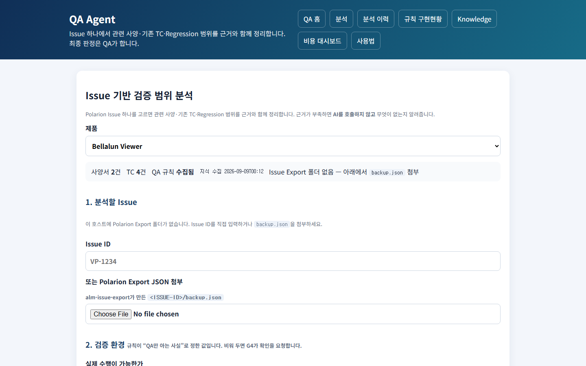
등록된 제품이 하나도 없으면 폼 대신 "등록된 제품이 없습니다. Knowledge에서 제품과 사양서·TC를 먼저 등록하세요." 안내만 나온다. 제품이 있으면 분석을 신청하는 폼이 3구획으로 표시된다.
- 제품 선택 — 제품을 바꾸면 화면이 그 제품 기준으로 다시 표시되고, 상단에 준비상태 요약이 뜬다 — 사양서 건수, TC 건수, QA 규칙 수집 여부(수집되지 않았으면 빨간색으로 강조되고 "이 제품의 QA 규칙 문서가 없어 분석이 진행되지 않습니다" 경고), 지식 수집 시각, Issue 목록을 바로 선택할 수 있는지 여부.
- "1. 분석할 Issue" — Issue 목록에서 고르거나, Issue 번호를 직접 입력하거나, Polarion 에서 내보낸 파일을 첨부한다.
- "2. 검증 환경" — QA 만 아는 사실이라 사람이 답해야 하는 항목이다. 실제 수행 가능 여부 / Test Data 준비 여부 / X-ray Exposure 가능 여부 / Dose Table 제공 여부 — 각 예/아니오/모름 중 선택. 확보한 관찰 수단·이 검증에 반드시 필요한 관찰 수단(UI 화면/ 제품 로그/API·WebSocket/DB/실장비/DICOM 수신 장비 중 체크). 환경 메모(자유 텍스트).
- "3. 조사 범위와 초안 허용" — 조사 범위를 제한하는 메모, "정보가 부족해도 초안으로 작성" 여부.
버튼과 결과
| 버튼 | 결과 |
|---|---|
| 분석 실행 | Issue 도 파일도 고르지 않았으면 안내 메시지가 뜨고 진행되지 않는다. 조건이 맞으면 화면 아래에 진행 상황 패널이 나타난다 |
제출 후에는 진행 상황이 화면에서 자동으로 계속 갱신되며(새로고침 불필요), 아래 단계가 순서대로 표시된다.
| # | 화면에 표시되는 단계 |
|---|---|
| 1 | Issue 구조화 |
| 2 | 지식 문서 로드 |
| 3 | QA 규칙 로드 |
| 4 | 근거 검색 |
| 5 | 조건 확인 (여기서 조건이 부족하면 분석이 멈추고 AI 는 호출되지 않는다) |
| 6 | AI 분석 |
| 7 | 결과 검증 |
| 8 | 최종 조건 확인 |
완료되면 자동으로 01-03 분석 상세 화면으로 넘어간다. 실패하면 진행바가 빨갛게 바뀌고
오류 메시지가 표시된다.
조건 확인 기준을 화면에서 직접 조정하는 기능 — ○(지금은 별도 작업 필요). 여러 Issue 를 한 번에 분석하는 기능 — ○(지금은 1건씩).
01-02 분석 이력 화면
| 화면 주소 | /qa-agent/analyses |
| 화면 제목 | "QA Agent 분석 이력" |
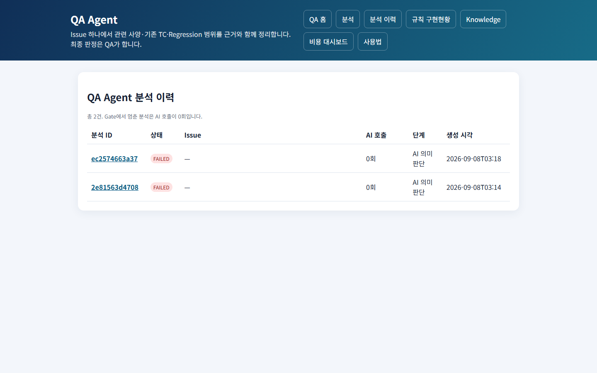
상단에 "총 N건. 조건 확인에서 멈춘 분석은 AI 호출이 0회입니다."라는 안내가 있다. 표에는
분석 ID(누르면 상세 화면으로 이동) / 상태 배지(조건 확인에서 막힌 경우 "조건 미충족"
표시 추가) / Issue 번호 / AI 호출 여부 / 진행 단계 / 생성 시각이 나온다. 이력이 없으면
"아직 분석이 없습니다. 새 분석을 실행하세요." 안내와 01-01 로 가는 링크가 뜬다. 목록이
길면 페이지를 넘기는 링크가 아래에 나온다.
01-03 분석 상세 화면
| 화면 주소 | /qa-agent/analyses/{분석 ID} |
| 화면 제목 | Issue 번호 |
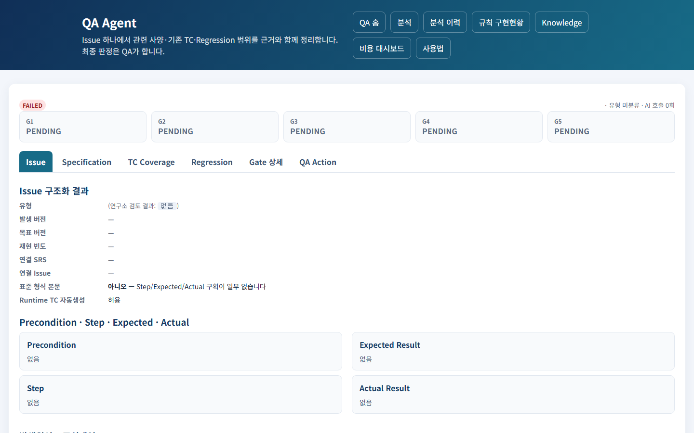
이 시스템에서 정보가 가장 많이 모여 있는 화면이다. 상단 요약(상태 배지, 제품명· Issue 유형·AI 호출 여부·소요 시간)과 그 아래 조건 확인 카드, 6개 탭으로 구성된다.
조건 확인 카드. 5가지 조건(G1~G5)을 카드로 보여주고, 각각 통과/보완 필요/입력 필요/ 막힘/대기 중 하나의 상태로 표시된다. 조건이 막히면 "진행하지 못한 이유" 안내와 함께 무엇을 보완해야 하는지 알려준다.
| 조건 | 확인하는 것 | 확인 시점 |
|---|---|---|
| G1 | Issue·문서·TC·버전 정보가 충분한가 | AI 분석 전 |
| G2 | 공식 사양에서 근거를 찾았는가 | AI 분석 전 |
| G3 | 기존 TC 가 원인을 실제로 다루는가 | AI 분석 후 |
| G4 | 실제로 검증을 수행할 수 있는 상황인가 | AI 분석 전 |
| G5 | Issue·사양·TC·기대 결과가 서로 모순되지 않는가 | AI 분석 후 |
이 중 G1·G2·G4 가 하나라도 막히면 AI 분석 자체가 진행되지 않는다 — 근거 없이 물어봐야 근거 없는 답만 나오기 때문이다.
Issue 탭
Issue 유형, 발생/목표 버전, 재현 빈도, 연결된 SRS·Issue, Issue 내용이 정해진 형식을 따랐는지 여부가 표시된다. Precondition / Step / Expected Result / Actual Result 가 4개 박스로 나뉘어 보인다. AI 가 분석한 원인·수정 대상·변경 전후 내용도 함께 표시된다. 본문에 이미지가 있으면 파일명 목록만 보여주고, 이미지 자체는 AI 가 판정하지 않는다는 안내가 붙는다.
Specification 탭
관련 사양이 몇 건 검색됐는지 요약이 뜨고, 사양 관련도 판정마다 카드가 나온다 — 판정 내용, 근거 목록(근거가 없으면 "근거 없음"이라고 표시되고 이 판정만으로는 확정하지 않는다는 안내가 붙는다), 그리고 QA 가 승인·반려를 남기는 영역(아래 "QA Action" 설명 참고).
TC Coverage 탭
검토 대상 TC 건수 요약과, TC 마다 판정 카드가 나온다 — TC 번호, 판정(아래 표), 원인 검출 가능 여부, 판정 신뢰도, 판정 사유, 근거 목록. 판정이 "유지"가 아니면 "실제 TC는 자동으로 바뀌지 않으며 QA 승인 후 반영됩니다"라는 안내가 붙는다.
| 판정 |
|---|
| 유지 |
| 경미 수정 |
| 수정 필수 |
| 신규 TC 필요 |
| Issue Link 수정 |
| 사양 확인 필요 |
Regression 탭
8가지 확인 항목은 항상 고정된 순서로 전부 표시된다 — AI 가 일부를 빠뜨려도 화면에는 8개가 모두 나오고, 각각 "해당/비해당"과 이유가 채워진다.
| 항목 | 뜻 |
|---|---|
| DIRECT | 변경된 기능 자체 |
| STATE | 상태 전환(A→B, B→A, A→B→A), 오류→정상, 연결→해제→재연결 |
| DATA | 캐시·에러코드·목록·환자·검사 정보의 잔존·오염 |
| PERSISTENCE | 저장·재로드·재진입·재시작 후에도 값이 유지되는지 |
| INTEGRATION | DICOM·API·WebSocket·외부 장치 연동 |
| PERMISSION | 계정 권한에 따른 노출·동작 차이 |
| PRIOR_ISSUE | 같은 원인으로 과거에 있었던 Issue 의 재발 |
| GENERATOR | Generator 관련 동작 |
Gate 상세 탭
5가지 조건 각각의 상태와, 시스템이 남긴 메모(문제 심각도와 내용)를 보여준다. 응답에서 실제로 존재하지 않는 TC 번호나 근거가 있었다면 여기서 걸러낸 내용을 알려준다. AI 가 "추가로 확인이 필요하다"고 판단한 내용이 있으면 그것도 표시된다.
QA Action 탭
이 화면에서 나온 판정 중 QA 승인이 꼭 필요한 항목(실제 TC 변경, SRS 연결 확정, Pass/Fail, Issue 종료, 새로운 결함 확정, Release 승인)을 요약해서 보여준다. 표에는 구분(사양 관련도/ TC Coverage/Regression) / 대상 / AI 판정 / 근거 유무 / QA 결정(아직 결정 안 됐으면 "미결정")이 나온다.
QA 승인 방법 — Specification·TC Coverage·Regression 탭의 각 판정 카드마다 QA 가 "승인/거절/수정 후 승인/근거 추가 필요" 중 하나를 고르고 메모를 남길 수 있다. 저장 을 누르면 화면이 새로고침되며 QA 의 결정이 함께 표시된다 — AI 의 원래 판정은 지워지지 않고 QA 결정과 나란히 남는다.
근거 등급. 사양 확인 결과를 "기대 결과"의 근거로 쓸 수 있는지는 근거의 출처에 따라 정해진다.
| 등급 | 근거 | 기대 결과 근거로 |
|---|---|---|
| 1 | 이번 요청에서 사용자가 직접 명시한 사양 | 가능 |
| 2 | 실제 수행 절차·캡처·검증 결과 | 가능 |
| 3 | 최신 유효 사양서 | 가능 |
| 4 | 매뉴얼 / 연동 문서 | 가능 (한계선) |
| 5 | 기존 TC | 불가 |
| 6 | 이전 버전 문서 | 불가 |
| 9 | 연구소 코멘트 | 불가 — 참고용일 뿐 |
표준 판정 문구. 모르는 것을 지어내지 않고 정해진 문구 중 하나로 답한다(16종): 문서상
확인되지 않음 · 추가 사양 확인 필요 · 기존 TC에서 확인되지 않음 · 사양 확인 전
Pass/Fail 판정 불가 · 실제 수행 확인 필요 · 검증 범위 제외 · UI 경로 간 동작
불일치 · 관련 SRS 존재는 확인되나 본문 직접 확인 필요 · 전체 분할 사양서 조사 완료 전
존재 여부 확정 불가 · 취소선/삭제 사양으로 현재 적용 여부 확인 필요 · 별도 API/WebSocket
검증 필요 · Issue Link 의미 일치 확인 필요 · Root Cause Coverage 부족 · 문서 수정
확인 대상 · Runtime TC 불필요.
감사(Audit) 정보. 화면 하단에서 펼쳐 볼 수 있는 영역에서 AI 에게 실제로 전달된 내용과 AI 가 응답한 내용을 그대로 확인할 수 있다(캐시로 재사용된 응답인지도 표시된다). 하단에는 "결과 내려받기", "분석 이력", "새 분석" 링크가 있다.
승인자를 기록에 남기는 기능 — ○(로그인 기능 없음, 00-06 참고). Polarion 에 결과를
되돌려 쓰는 기능 — ○. 결과를 TC 관리 Excel 에 직접 반영하는 기능 — ○.
01-04 규칙 자동화 현황 화면
| 화면 주소 | /qa-agent/rules |
| 화면 제목 | "규칙 구현현황" |
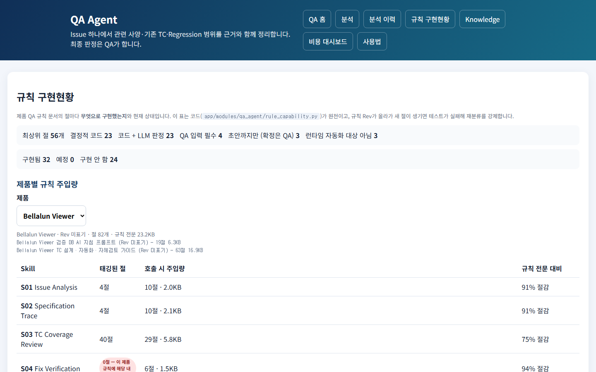
QA 규칙 문서의 각 절이 이 시스템에서 어떻게 다뤄지는지 보여준다. 상단에 전체 절 개수와 구현 방식별·상태별 건수 요약이 있다. "제품별 규칙 주입량" — 제품을 고르면 그 제품 규칙에서 각 기능(Skill)마다 실제로 사용된 절이 몇 개인지, 규칙 전체 대비 얼마나 줄여서 사용했는지 보여준다(사용된 절이 0개라고 해서 결함은 아니다 — 그 제품 규칙이 그 주제를 다루지 않는다는 뜻일 수 있다). 규칙 문서가 아직 수집되지 않은 제품은 안내 문구만 나온다. "절별 구현 방식" 표는 제품과 무관하게 규칙의 각 절이 구현됐는지/예정인지/아직인지 보여준다.
이 화면은 조회 전용이며, 현재 규칙 56개 절 중 49개(88%)가 자동화 가능한 것으로 분류돼 있고 그중 33개가 구현돼 있다.
01-05 사용법 화면
| 화면 주소 | /qa-agent/guide |
| 화면 제목 | "QA Agent 사용법" |
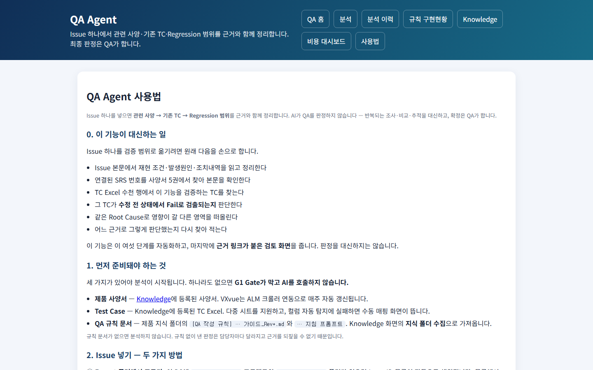
이 기능이 대신하는 일, Issue 를 넣는 방법, 검증 환경을 입력하는 이유, 조건 확인 카드 읽는 법, 탭별로 무엇을 보는지, 감사 정보 확인법, 자주 막히는 경우와 해결법, 다른 기능과의 관계를 안내하는 순수 설명 화면이다.
01-06 알려진 한계와 미구현
- TC 후보가 너무 많다 — ◐: TC 후보를 40건 정도 검토 대상으로 올리는데, 실제로 관련 있다고 판정되는 것은 2~3건뿐이다. 단순히 개수를 줄이는 기준만으로는 관련 있는 TC 를 놓칠 위험이 있어, 실제로 몇 위 안에 관련 TC 가 들어오는지 측정한 뒤 기준을 정해야 한다.
- 의미 기반 검색 — ○: 지금은 정확히 일치하는 표현과 키워드 유사도로만 검색한다.
의미 기반 검색을 쓰려면 외부 서비스에 사양서 내용을 보내야 해서
00-01(보안 원칙)과 충돌한다. 지금 방식의 탐지율을 먼저 측정해야 한다. - SRS 문서의 세부 메타데이터(SRS 번호, 상위/하위 관계, 연결된 SRS) 자동 추출 — ○
- 조건 확인 기준 화면 조정, 여러 Issue 일괄 분석, 2차 기능 확장(수정 확인 TC 생성,
Issue 작성 지원, API/DICOM 검증, Generator 검증, Release 검증 범위 산출) — ○
(
부록 C참고)
02 Regression 영향 분석
/impact-analyzer · Issue 가 아니라 변경사항 문서(변경점 정리 문서, Release Note
등)를 받아 재검증 TC 를 추천한다. QA Agent(01) 보다 먼저 만들어진 기능으로, 입력이
Polarion 이 아닐 때 쓴다. 5개 화면으로 구성된다.
02-01 분석 실행 화면
| 화면 주소 | /impact-analyzer |
| 화면 제목 | "Regression 분석" |
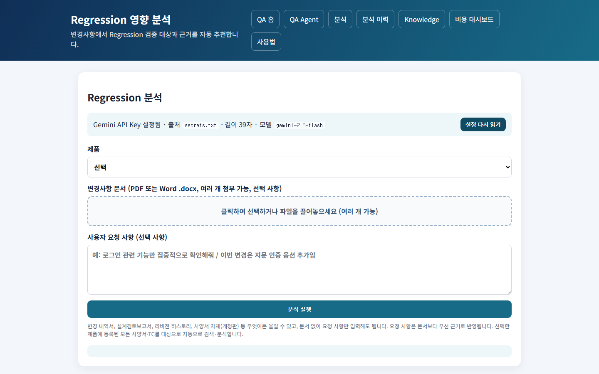
화면 상단에 AI 서비스 연결 상태 배너가 있고, "설정 다시 읽기" 버튼으로 즉시 갱신할 수 있다. 사용량 한도를 넘었으면 배너에 그 사실이 표시된다. 등록된 제품이 없으면 폼 대신 안내문이 뜬다. 있으면 폼 — 제품 선택 · 변경사항 문서(PDF/Word, 여러 개 첨부 가능, 선택 사항) · 사용자 요청 사항(선택 사항). 문서 없이 요청 사항만 입력해도 되고, 선택한 제품에 등록된 모든 사양서·TC 를 자동으로 검토 대상에 넣는다.
버튼과 결과
| 버튼 | 결과 |
|---|---|
| 분석 실행 | 파일도 요청사항도 없으면 안내 메시지가 뜨고 진행되지 않는다. 조건이 맞으면 진행 상황 패널이 나타난다 |
제출 후 진행 상황은 화면에서 자동으로 계속 갱신된다(새로고침 불필요). 단계는 "입력 문서 분석 → 변경사항 추출 → 최신 사양서 조회 → TC 후보 검색 → AI 영향도 분석 → Regression TC 선정 → 신규 TC 초안 검증 → 결과 생성" 순으로 표시되고, 완료되면 "완료 · 추천 N건 · HTML Report 링크 · XLSX 링크"(있으면 "TC 초안" 링크도)가 뜬다.
02-02 분석 이력 화면
| 화면 주소 | /analyses |
| 화면 제목 | "분석 이력 (전체 N건)" |
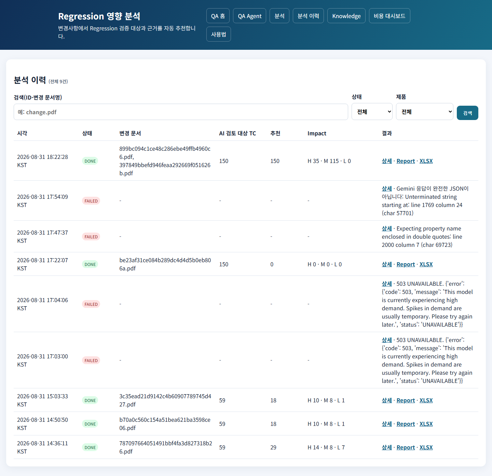
QA Agent 이력과는 분리되어 이 기능의 분석만 표시된다. 검색 상자(분석 ID·변경 문서명), 상태 필터, 제품 필터가 있고, 필터를 적용 중이면 "필터 초기화" 링크가 뜬다. 표에는 시각 / 상태 / 변경 문서 / AI 가 실제로 검토한 TC 수 / 추천 건수 / 영향도(높음·중간·낮음 건수) / 결과(상세·Report·XLSX·TC초안 링크, 실패 시 오류 메시지)가 나온다. 완료된 분석에만 Report·XLSX 링크가 보이고, 신규 TC 초안이 실제로 만들어졌을 때만 그 링크가 보인다.
02-03 분석 상세 화면
| 화면 주소 | /analyses/{분석 ID}/view |
| 화면 제목 | "분석 상세 · {ID}" |
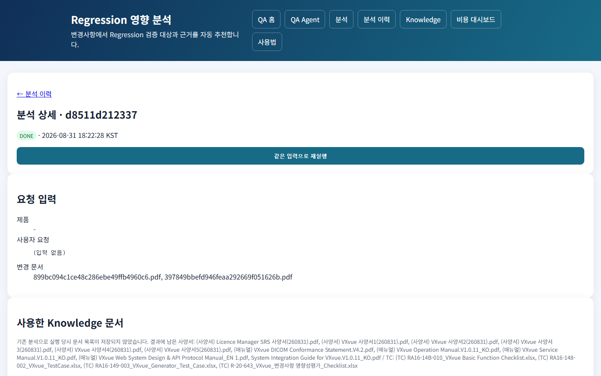
6개(완료 시 7개) 섹션으로 구성된다.
- 헤더 — 상태, 생성 시각. 완료됐거나 실패한 분석에는 "같은 입력으로 재실행" 버튼이 있어, 누르면 같은 조건으로 새 분석이 시작된다(원본 파일이 이미 삭제됐으면 재실행할 수 없다).
- 요청 입력 — 제품, 사용자 요청 원문, 변경 문서 파일명.
- 사용한 지식 문서 — 이 분석에 실제로 사용된 사양서·TC 목록(문서명·버전·등록 시각).
- AI 요청 기록 — 사용한 모델, 이전 결과를 재사용했는지 여부, 그리고 펼쳐서 볼 수 있는 영역에 실제로 AI 에게 전달된 내용과 AI 의 응답 원문이 있다.
- AI 검토 대상 TC 선정 기준 — 어떤 기준으로 TC 후보를 추려 AI 에게 넘겼는지 설명과, 펼쳐서 볼 수 있는 "선정 순위" 목록.
- 분석 결과 요약 — 전체 TC 수·검토 대상 수, TC 별 영향도·추천 여부·신뢰도·판단 근거 표. 완료된 분석에는 HTML Report·XLSX 링크가 있다.
- (완료된 분석만) QA 정답 확정 · 정확도 평가 — 실제로 재검증이 필요하다고 QA 가 확정한 TC 번호를 입력하는 칸과 메모 칸이 있다. "QA 정답 저장 및 평가" 버튼을 누르면 화면이 새로고침되며 이 분석의 Precision/Recall/F1 결과와 그동안 누적된 평균 결과가 함께 표시된다.
02-04 HTML 리포트 화면
| 화면 주소 | 분석 완료 후 생성되는 결과 보고서 링크 |
| 화면 제목 | "AI Regression Impact Analysis Report" |
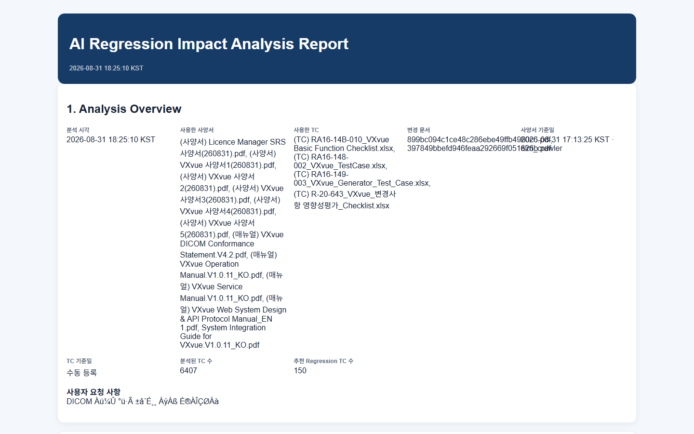
분석이 끝나면 자동으로 만들어지는 열람 전용 보고서다. 6개 섹션 — 분석 개요(시각, 사용한 사양서/TC/변경 문서, 분석된 TC 수, 추천 건수), 변경사항 요약(변경 기능·관련 모듈·수정 유형·재현 방법 등), 영향 분석(전체/검토대상/추천/높음/중간/낮음 건수와 기능별 영향 영역), 추천 Regression TC 목록(TC 번호·영향도·AI 확신도·선정 이유·확인 포인트, "확인 필요"로 강제 표시되는 항목도 있음), 신규 TC 제안(기존 TC 로 다루지 못하는 변경사항이 있을 때만), AI 판단 주의사항("최종 범위는 검증 담당자가 확정해야 한다"는 고정 안내).
02-05 사용법 화면
| 화면 주소 | /impact-analyzer/guide |
| 화면 제목 | "Regression 영향 분석 사용법" |
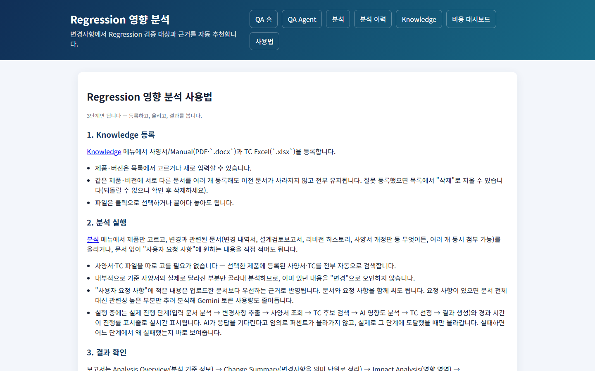
"3단계면 됩니다 — 등록하고, 올리고, 결과를 봅니다."라는 안내로 시작해 ① Knowledge 등록 ② 분석 실행(진행 단계가 실제 진행 상황을 그대로 따라간다는 설명) ③ 결과 확인(보고서 섹션 순서, 영향도 값의 의미)을 설명한다. VXvue 사양서 자동 동기화 안내와 비용 관리(호출 1회, 재사용, 하루 사용량 한도) 안내도 있다.
02-06 알려진 한계와 미구현
QA Agent(01)와 이 기능을 하나로 통합하는 것 — ○(지금은 입력 형태가 달라 별도 화면).
03 매뉴얼 개정 검증
/manual-review · Word/PDF 매뉴얼의 개정 내용이 사양서와 맞는지 AI 가 1차 검토한다.
사람이 매뉴얼 전체를 사양서와 대조하던 작업을 줄인다. 3개 화면으로 구성된다.
03-01 검증 등록·이력 화면
| 화면 주소 | /manual-review |
| 화면 제목 | "매뉴얼 개정 검증" |
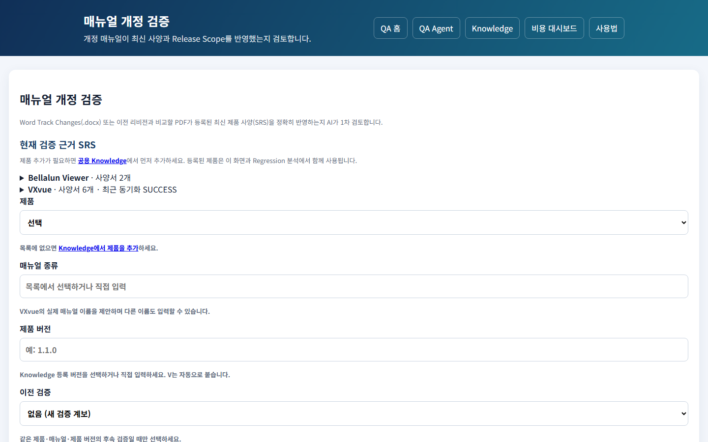
"현재 검증 근거 SRS" 패널 — 제품별로 펼쳐 보는 목록. 요약줄에 "제품명 · 사양서 N개 · 최근 동기화 상태"가 나오고, 펼치면 사양서 파일명·버전·등록시각이 보인다. 사양서가 없으면 "등록된 사양서가 없어 SRS 근거를 찾을 수 없습니다."라고 안내한다.
검증 등록 폼 — 제품 · 매뉴얼 종류(입력하면 이 제품에서 썼던 이름이 자동으로 제안됨) · 제품 버전(예: "1.1.0" 처럼 입력하면 앞에 V 가 자동으로 붙는다) · 이전 검증("없음(새 검증 계보)" 또는 기존 검증 중 선택 — 제품·매뉴얼 종류를 고르면 그에 맞는 후보만 보인다) · 개정 Manual 파일(Word Track Changes 또는 PDF, 필수) · Release Note(선택, 첨부하지 않으면 그 제품에 등록된 최신 문서를 자동으로 사용) · 설계검토보고서(선택, 동일).
버튼과 결과
| 버튼 | 결과 |
|---|---|
| 검증 시작 | 필수 항목이 비어 있으면 안내 메시지가 뜬다. 조건이 맞으면 진행률 패널이 나타나고, 화면에서 자동으로 계속 갱신된다(새로고침 불필요). 완료되면 "완료 · 변경 N건 분석 대상 M건 · 누락 의심 X/Y건 · 결과 보기" 링크가 뜬다(PDF 를 처음 등록한 경우는 "기준 등록 완료 · 다음 검증에서는 이전 검증으로 선택하세요"라고 안내) |
검증 이력 표 — 등록 시각 / 제품 / 매뉴얼 / 제품 버전 / 검증 회차 / 상태 / 결과
링크(03-02로 이동).
03-02 개정 상세 화면
| 화면 주소 | 검증 이력에서 "결과 보기"를 눌러 들어가는 화면 |
| 화면 제목 | "매뉴얼 개정 검증 결과" |
로컬에 아직 완료된 검증 이력이 없어 이 화면은 스크린샷을 캡처하지 못했다. 실제 데이터가 쌓이면 다시 캡처해 채워 넣어야 한다.
상단에 제품 · 매뉴얼명 · 검증 회차 · 제품 버전과 "판정 요약: {판정} {건수}건"이 나온다. 원본이 Word 파일이면 "Word Comment 삽입 DOCX 생성" 링크가 뜨고, PDF 면 대신 "PDF 변경은 모든 항목에 사람 확인이 필요하며 Word Comment 생성은 지원하지 않습니다."라는 안내가 뜬다.
아래 항목은 데이터가 있을 때만 화면에 나타난다.
- 누락 의심(Release Note/설계검토보고서 대비) — 있을 때만 표시. 참고용 정보이며 버튼은 없다.
- 다른 Manual 영향 확인 — 있을 때만 표시. 대상 매뉴얼명·근거·QA 상태를 보여주고, QA 가 "확인 필요/영향 있음/영향 없음" 중 하나를 골라 확정할 수 있다. 저장하면 화면이 새로고침되며 상태가 반영된다.
- 이전 검증에서 미해결이었던 지적사항 — 있을 때만 표시. 이전 지적사항과 현재 변경을 참고용으로 짝지어 보여주고, QA 가 "해결됨/미해결/재오픈/QA 판단으로 제외" 중 하나를 골라 확정한다. 이전 지적사항이 자동으로 재사용·재삽입되지는 않는다 — QA 가 직접 최종 상태를 정하는 구조다.
- 변경사항(N건) — 항상 표시. 각 변경 항목마다 종류(추가/삭제/이동 등) 표시, 이미지가 바뀐 변경이나 PDF 비교로 판정된 항목은 "사람 확인 필요" 표시가 추가된다. 단순 서식 변경으로 분류된 항목은 그 사실만 표시되고, 실질적인 변경에는 AI 판정(문제없음/보강 필요/수정 필요/삭제 필요/누락 의심/사양 확인 필요/버전 확인 필요/판단 불가)과 판정 신뢰도가 함께 표시된다. QA 가 판정을 바꾸면 "QA 재판정" 표시가 추가되고, AI 의 원래 판정은 지워지지 않고 QA 재판정과 나란히 남는다. 변경 내용, 근거(사양서명·항목 등), AI 가 제안한 코멘트 문구가 함께 표시된다. 실질적인 변경마다 QA 가 판정을 바꾸고 메모를 남길 수 있는 영역이 있으며, 저장을 누르면 화면이 새로고침되며 반영된다.
"Word Comment 삽입 DOCX 생성" 링크 — 누르면, 원본 Word 파일에 문제가 있다고 판정된 항목마다 해당 문단에 코멘트가 삽입된 새 파일이 즉시 다운로드된다. 코멘트 내용은 AI 가 제안한 문구와 QA 가 남긴 메모를 합친 것이다. 원본의 기존 변경 이력·코멘트는 그대로 보존된다. 코멘트를 넣을 문제 항목이 하나도 없으면 이 기능은 사용할 수 없다.
03-03 사용법 화면
| 화면 주소 | /manual-review/guide |
| 화면 제목 | "매뉴얼 개정 검증 사용법" |
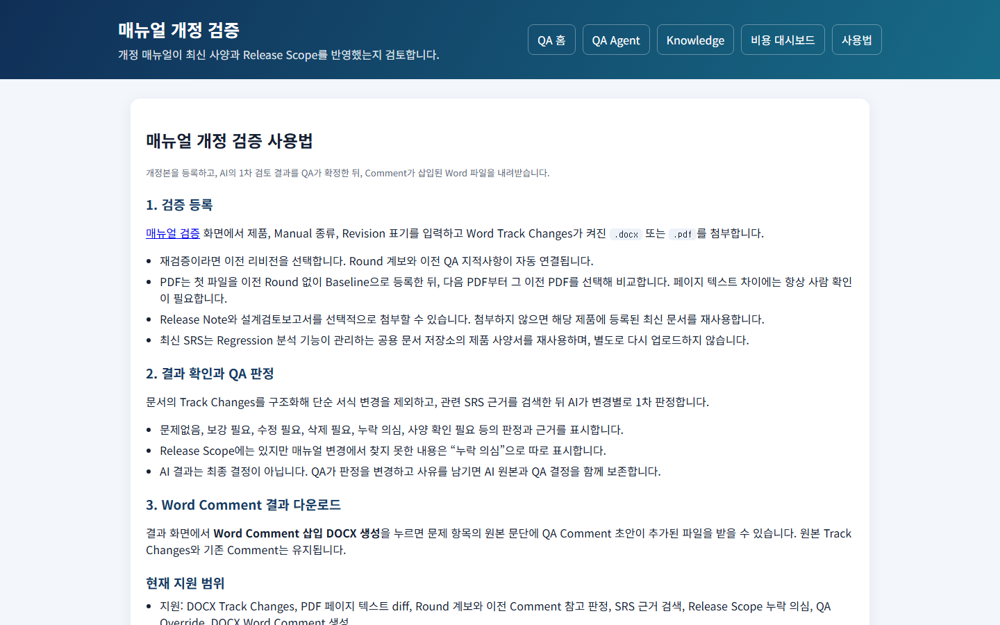
검증 등록 방법, 결과 확인과 QA 판정 방법, Word Comment 다운로드 방법, 현재 지원 범위를 설명하는 정적 안내 화면이다.
화면 문구가 실제와 다른 부분 (부록 B 참고): 이 화면의 "현재 지원 범위" 문구는 "다른 Manual 영향 확인" 기능을 "준비 중"이라고 적어 두었지만, 실제로는
03-02화면에 이미 있고 동작한다. 다음에 이 화면 문구를 고쳐야 한다.
04 Knowledge 관리
/knowledge · 세 분석 기능(01·02·03)이 함께 쓰는 제품별 사양서·TC·매뉴얼·QA 규칙을
관리한다. 3개 화면으로 구성된다.
04-01 Knowledge 메인 화면
| 화면 주소 | /knowledge |
| 화면 제목 | "공용 Knowledge" |
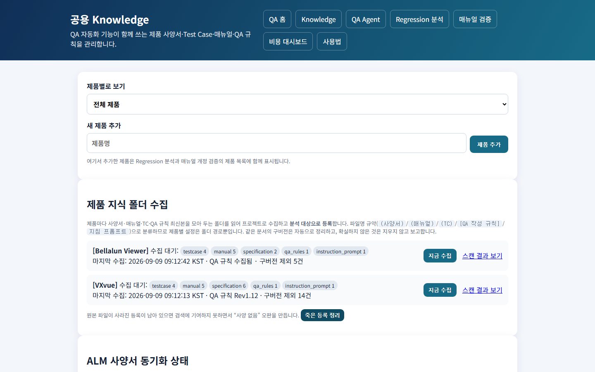
제품별로 보기 — 제품을 고르면 그 제품의 항목만 화면에 남고 나머지는 가려진다.
새 제품 추가 — 제품명을 입력하고 "제품 추가" 를 누르면 저장되고 화면이 새로고침되며
목록에 나타난다. 여기서 추가한 제품은 01·02·03 의 제품 목록에도 함께 표시된다.
제품 지식 폴더 수집 — 제품별로 현재 상태를 보여준다 — 폴더 경로가 설정되지 않음 / 설정됐지만 서버가 접근할 수 없음 / 접근 가능(수집 대기 중인 파일 종류별 건수). "마지막 수집" 시각, QA 규칙 수집 여부(안 됐으면 빨간 글씨로 "미수집"), 구버전 정리 건수(있을 때만)가 표시된다. "지금 수집" 버튼(접근 가능한 제품에만 표시) — 누르면 즉시 비활성화 되고 "수집 중..."으로 바뀌며, 완료되면 결과가 팝업으로 뜨고 화면이 새로고침된다. "스캔 결과 보기" 링크로 상세 내용을 새 창에서 확인할 수 있다. 하단 "죽은 등록 정리" 버튼 — 확인 메시지 후 실행하면, 원본 파일이 이미 사라진 등록을 전부 찾아 정리하고 결과를 팝업으로 보여준다(정리된 것이 있으면 화면이 새로고침된다).
ALM 사양서 동기화 상태 — VXvue 전용 상태 표시. 마지막 동기화 시각과 상태를 보여준다 (자동으로 주 1회 실행됨).
사양서 / Manual 등록(왼쪽) — 제품명·버전을 입력하고 PDF/Word 파일을 올린 뒤 "등록" 을 누르면 목록에 추가된다. 같은 제품·버전에 서로 다른 문서를 여러 개 등록해도 이전 문서를 대체하지 않는다. 목록의 각 문서마다 "다운로드" / "삭제"(확인 메시지 후 삭제, 원본 파일도 함께 지워짐) 버튼이 있다.
Test Case 등록(오른쪽) — 같은 방식으로 Excel 파일을 등록한다. 자동으로 컬럼을
인식하지 못하면 파일은 지워지지 않고 04-02 화면으로 넘어가 직접 지정하게 된다.
매뉴얼 / Protocol(지식 폴더 수집으로만 채워짐) — 등록 폼은 없고, 목록과 다운로드/삭제 버튼만 있다.
04-02 TC 컬럼 매핑 화면
| 화면 주소 | TC 등록에서 컬럼을 자동으로 인식하지 못했을 때만 연결되는 화면 |
| 화면 제목 | "TC 컬럼 매핑" |
실패한 업로드가 있을 때만 들어오는 화면이라, 지금 데이터로는 재현하지 못해 스크린샷을 생략했다.
업로드한 원본 파일명과, 있다면 오류 메시지가 표시된다. 시트를 고르고 "항목명이 적힌
행(헤더 행)" 번호를 지정한 뒤 "미리보기 갱신" 을 누르면 그 시트의 내용이 표로
보인다(헤더 행은 강조 표시됨). 그 아래에서 TC ID(필수)·분류·기능명·사전조건·시험절차·
예상결과·결과·비고 각각을 어느 열에 매칭할지 고른다(비슷한 이름의 열은 미리 추천되어
선택돼 있다). "이 매핑으로 등록" 을 누르면 그 설정대로 등록되고 04-01 화면으로
돌아간다(이후 같은 파일 형식은 이 설정을 기억한다). TC ID 를 매칭하지 않는 등 필수
항목이 빠지면 오류 메시지와 함께 같은 화면이 다시 표시된다.
04-03 사용법 화면
| 화면 주소 | /knowledge/guide |
| 화면 제목 | "Knowledge 사용법" |
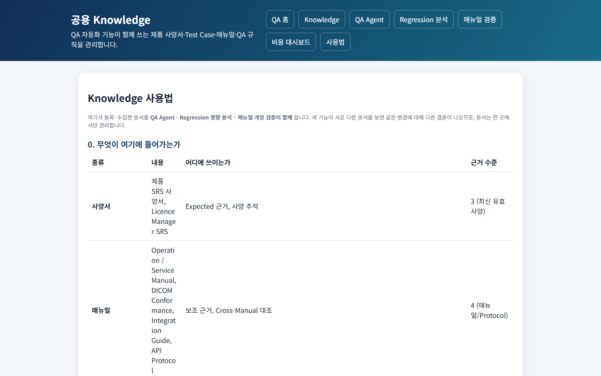
무엇이 여기에 들어가는지(사양서·매뉴얼·TC·QA 규칙의 역할과 근거로서의 신뢰도), 권장 방식(제품 지식 폴더 수집 절차와 파일명 규칙), 서버가 폴더에 접근하지 못할 때의 대안, 개별 파일 수동 등록 방법, TC Excel 이 어떻게 읽히는지, 등록 후 확인 방법, 새 제품 추가 절차, 사내 문서가 어디에 보관되는지(외부로는 발췌만 나간다는 점)를 안내하는 정적 화면이다.
05 비용 대시보드
/cost-dashboard · AI 호출이 실제로 얼마나 발생했는지, 무엇이 비용을 줄이고 있는지
기능별로 집계한다. 2개 화면으로 구성된다.
05-01 비용/캐시 대시보드 화면
| 화면 주소 | /cost-dashboard (최근 7일/30일/90일 중 선택 가능) |
| 화면 제목 | "비용/캐시 대시보드" |
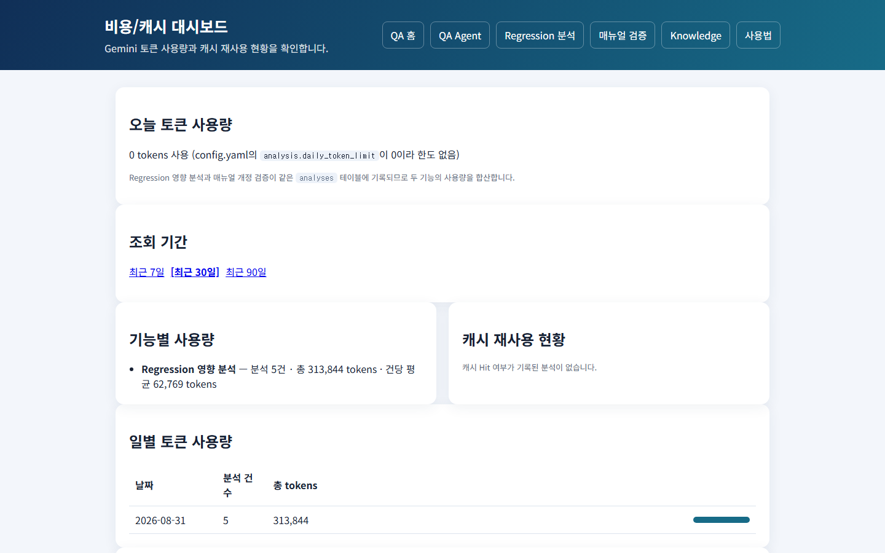
조회 전용 화면이며, 값을 바꾸는 버튼은 없다.
- 오늘 토큰 사용량 — 사용량과 한도, 한도를 넘었는지 여부가 배지로 표시된다.
- 조회 기간 — 최근 7일/30일/90일 중 선택.
- 기능별 사용량 — 기능마다 분석 건수·총 사용량·건당 평균.
- 캐시 재사용 현황 — 같은 입력을 재사용해 실제 호출을 얼마나 줄였는지 비율로 표시.
- 일별 토큰 사용량 — 날짜별 분석 건수와 사용량을 표와 막대로 표시.
- 최근 분석(최대 50건) — 완료 시각·기능·제품·사용량·캐시 재사용 여부·분석 ID.
사용자별 사용량 집계(로그인 기능 없음) — ○. 예산 초과 예상 시 사전 경고 — ○.
05-02 사용법 화면
| 화면 주소 | /cost-dashboard/guide |
| 화면 제목 | "비용 대시보드 사용법" |
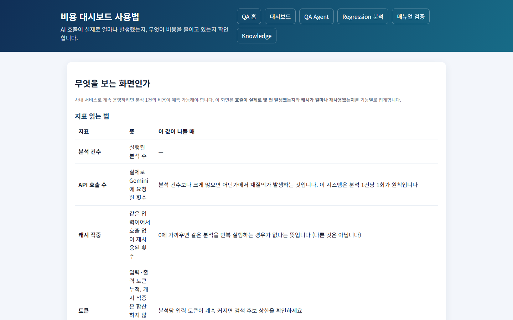
각 지표를 읽는 법, 비용이 줄어드는 이유들, 하루 사용량 한도 설정법, 모델 등급별 단가, 비용이 예상보다 많이 나올 때 확인하는 순서를 안내하는 정적 화면이다.
06 QA Manual Hub (하위 서비스)
/manual-hub — 제품 매뉴얼과 기술문서를 한 곳에 모아 보관하는 별도의 문서관리 시스템이다.
핵심 앱(01~05)과는 완전히 분리된 별도 시스템이라, 이번 개정에서는 화면 단위 상세
조사를 진행하지 않았다. 화면별 상세 사양이 필요하면 별도로 조사해야 한다. 아래는 기존에
확인된 기능 수준의 요약이다.
- 문서 보관과 이력 — ✅: 제품 매뉴얼·기술문서를 이전 버전을 지우지 않고 보관한다. 한 번 등록된 버전은 삭제해도 완전히 사라지지 않고 보관함으로 옮겨진다.
- 핵심 앱과의 연결 — ✅: 핵심 앱 화면에서 링크로 연결될 뿐, 데이터나 처리 과정을 공유하지 않는다.
- 계정·백업 — ✅: 로그인 계정으로 접근하고, 업로드한 사람이 자동으로 기록된다. 매일 자동으로 백업된다.
07 운영
화면은 없고 배포·감시·백업 절차로 구성된다.
- 배포 — ✅: 로컬 테스트 통과 → 서버 반영 → 재기동 → 정상 동작 확인까지 한 번에 진행된다. 서버에 이미 있는 운영 데이터·비밀 설정은 배포 때 덮어쓰지 않는다.
- 감시와 백업 — ✅: 서버 상태를 주기적으로 자동 점검하고, 매일 자동으로 백업한다.
- 운영 상태 확인 — ✅: 운영 담당자가 서버 상태(데이터 정합성, 실행 중인 작업, 멈춘 작업)를 확인할 수 있는 별도 화면이 있고, 설정을 앱 재기동 없이 다시 불러올 수 있다.
- 배포 되돌리기(롤백) — ○: 지금은 이전 버전을 수동으로 다시 올려야 한다. 무중단 배포 — ○: 재기동 시 짧게(수 초) 끊긴다.
부록 A. 화면 목록
| 사양번호 | 화면 주소 | 화면 | 스크린샷 |
|---|---|---|---|
| — | / |
홈 (기능 카드) | images/00-hub.png |
| 01-01 | /qa-agent |
QA Agent 분석 실행 | images/01-01-qa-agent-index.png |
| 01-02 | /qa-agent/analyses |
분석 이력 | images/01-02-qa-agent-history.png |
| 01-03 | /qa-agent/analyses/{id} |
분석 상세·승인 | images/01-03-qa-agent-detail.png |
| 01-04 | /qa-agent/rules |
규칙 자동화 현황 | images/01-04-qa-agent-rules.png |
| 01-05 | /qa-agent/guide |
사용법 | images/01-05-qa-agent-guide.png |
| 02-01 | /impact-analyzer |
Regression 영향 분석 실행 | images/02-01-impact-analyzer-index.png |
| 02-02 | /analyses |
영향 분석 이력 | images/02-02-impact-analyzer-history.png |
| 02-03 | /analyses/{id}/view |
영향 분석 상세 | images/02-03-impact-analyzer-detail.png |
| 02-04 | (분석 완료 시 생성) | HTML 리포트 | images/02-05-impact-analyzer-report.png |
| 02-05 | /impact-analyzer/guide |
사용법 | images/02-04-impact-analyzer-guide.png |
| 03-01 | /manual-review |
매뉴얼 개정 검증 등록·이력 | images/03-01-manual-review-index.png |
| 03-02 | (검증 이력에서 진입) | 개정 상세 | (미캡처 — 이력 데이터 없음) |
| 03-03 | /manual-review/guide |
사용법 | images/03-02-manual-review-guide.png |
| 04-01 | /knowledge |
지식 관리 | images/04-01-knowledge-index.png |
| 04-02 | (실패 업로드에서 진입) | TC 컬럼 매핑 | (미캡처 — 실패 업로드로만 진입) |
| 04-03 | /knowledge/guide |
사용법 | images/04-03-knowledge-guide.png |
| 05-01 | /cost-dashboard |
비용 | images/05-01-cost-dashboard.png |
| 05-02 | /cost-dashboard/guide |
사용법 | images/05-02-cost-dashboard-guide.png |
| 06 | /manual-hub/ |
QA Manual Hub | (별도 시스템 — 미캡처) |
부록 B. 남은 결정과 조치
B.1 사용자 조치가 필요한 것
| 내용 | |
|---|---|
| A-1 | 메일 발송 계정 설정 — 설정하면 알림이 바로 동작 (00-07) |
| A-2 | AI 유료 사용 사내 승인 — 결제는 완료, 승인만 남음 |
| A-3 | 최신 모델 공식 단가 확인 — 현재 잠정값 (00-07) |
| A-4 | GitHub Support 캐시 삭제 요청 — docs/local/SECURITY_INCIDENT_2026-09-09.md |
| A-5 | 작업 스케줄러 등록 — 지식 업로드 주 1회 자동화 (00-05) |
B.2 함께 결정해야 하는 것
- 사용자 로그인 + 보안 연결 (
00-06) — 승인 기록에 "누가"를 남기려면 필요하지만, 로그인만 먼저 붙이면 오히려 정보가 노출될 위험이 있어 함께 결정해야 한다 - TC 후보 상한 (
01-06) — 정확도 평가 데이터가 쌓여야 근거 있게 내릴 수 있다
B.3 화면 문구가 실제 구현을 못 따라간 사례
03-03(매뉴얼 개정 검증 사용법 화면)이 "다른 Manual 영향 확인"을 "준비 중"이라고 적어 두었지만03-02화면에는 이미 구현·동작 중이다. 다음 배포에서 화면 문구를 고쳐야 한다.
B.4 지금 남아 있는 데이터 이슈
VXvue 의 매뉴얼 문서 한 건이 사양서로 잘못 등록돼 있다. 같은 문서의 최신 버전이 매뉴얼로
따로 등록돼 있어 옛 버전이 사양서로 검색되는 상태다. 내용이 달라 자동으로 지우지
않았다 — 04-01에서 삭제하면 된다.
부록 C. 요구할 수 있는 확장 후보
이 문서를 보고 무엇을 더 요구할지 정하는 데 쓰라고 정리한다. 우선순위는 정하지 않았다.
C.1 QA Agent 기능 확장 (01-03)
- 수정된 Issue 의 수정 확인 TC 생성
- Issue 작성 초안·종료 조건 점검
- Command·Tag·WebSocket 단위 검증 항목 도출
- Generator 연동 검증
- 릴리스 단위 검증 범위 산출
C.2 정확도
- 평가 데이터를 쌓아 TC 후보 상한 최적화 (
01-06) - 오판 사례 축적과 재발 방지
- 제품별 검색 가중치 튜닝
C.3 사용성
- 여러 Issue 일괄 분석 (
01-01) - 결과를 TC 관리 Excel 로 직접 반영 (
01-03) - 분석 결과 비교 (이전 분석과 무엇이 달라졌나)
- 문서 미리보기·버전 비교 (
04-01) - 검색이 무엇을 찾았는지 보여주는 화면
C.4 연동
- Polarion 쓰기 (승인 결과 반영,
01-03) - Redmine·메일 알림 연동
- CI 연동 (빌드마다 자동 분석)
C.5 운영
- 사용자 로그인·권한 (
00-06) - 사용자별 사용량·비용 (
05-01) - 무중단 배포, 되돌리기 (
07) - 알림 종류 확대 (
00-07)
부록 D. 관련 문서
| 문서 | 내용 |
|---|---|
docs/QA_AGENT_ARCHITECTURE.md |
QA Agent 내부 구조 |
docs/PRODUCT_ONBOARDING.md |
새 제품 추가 절차 |
docs/USER_GUIDE.md |
사용자 안내 |
docs/DEPLOYMENT.md |
배포 |
docs/SERVERS.md |
서버 3개 역할과 명령 |
docs/OPERATIONS.md |
운영 |
docs/POST_DEPLOY_TESTS.md |
배포 후 테스트 |
docs/COST_OPTIMIZATION.md |
토큰 절약 |
docs/EVALUATION.md |
정확도 평가 |
docs/CONTEXT_ENGINEERING.md |
프롬프트 구성 |
NEXT_STEPS.md · OPEN_QUESTIONS.md |
남은 작업·미결정 |